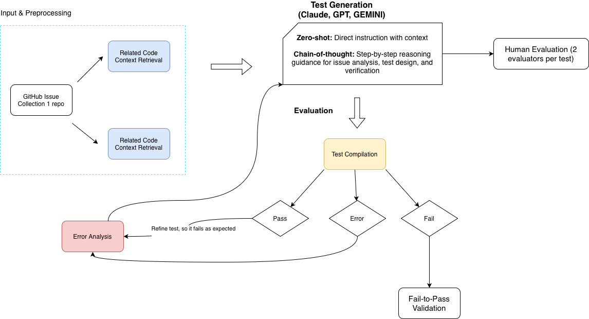
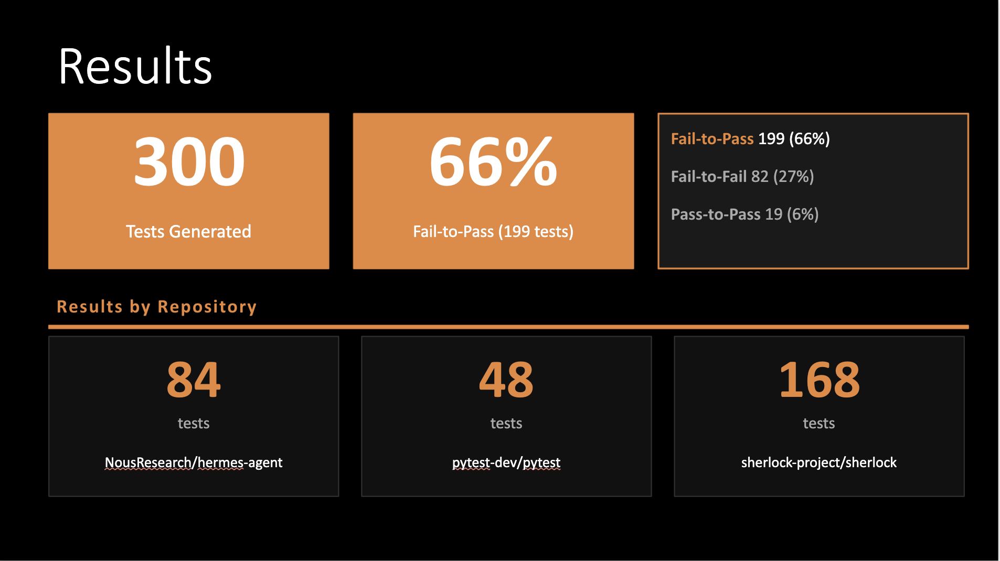
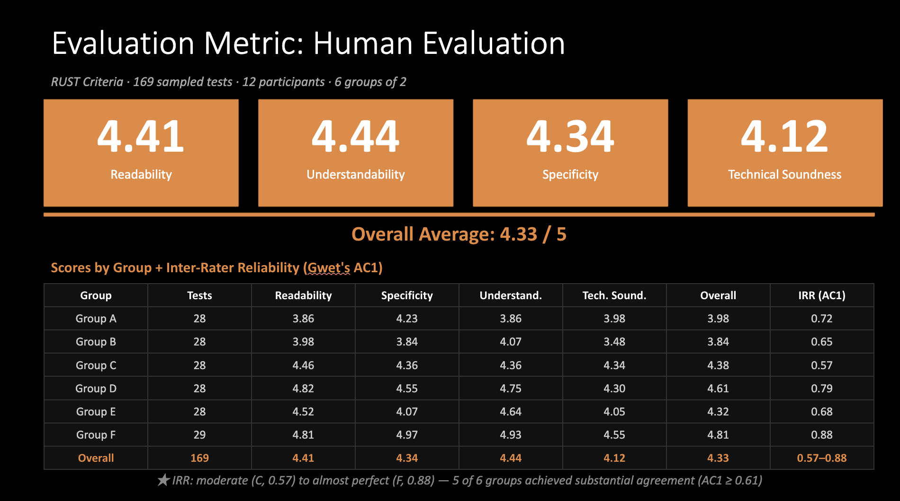

This research project explores how large language models can generate executable regression tests from real GitHub issue reports and linked pull requests. The system collects closed bug issues, associated fixing pull requests, changed source files, and repository context, then transforms that information into structured inputs for LLM-assisted test generation.
The generated tests are evaluated using execution-based validation by running them against both buggy and fixed versions of the target repositories. A test is considered successful when it fails on the buggy version and passes on the fixed version, showing that it captures the behavior corrected by the pull request.
Across 300 generated tests from multiple open-source repositories, the pipeline achieved a 66% fail-to-pass success rate. The project also included human evaluation using the RUST criteria to assess readability, understandability, specificity, and technical soundness.
The pipeline begins with GitHub issue collection and related code context retrieval. The collected context is passed into LLM-based test generation, followed by compilation, execution, error analysis, refinement, and fail-to-pass validation.

The project began with a research phase reviewing prior work in automated test generation, search-based testing, symbolic execution, regression test prioritization, reinforcement learning, and history-based test generation. This helped define the research gap: many existing approaches rely heavily on source-code structure, execution history, or predefined testing strategies, while this project focuses on using real issue reports and linked development artifacts as inputs for test generation.
The workflow collects GitHub issues and linked pull requests, retrieves relevant code context, generates tests using an LLM, and validates those tests by executing them against buggy and fixed repository versions. This creates an objective way to evaluate whether the generated tests actually detect the defect described by the issue.
The completed pipeline includes:
The automated evaluation included 300 generated tests across three open-source repositories. Of these, 199 tests achieved fail-to-pass behavior, producing an overall success rate of approximately 66%.

The evaluated repositories included NousResearch/hermes-agent, pytest-dev/pytest, and sherlock-project/sherlock. The results show that the pipeline was able to generate useful regression tests for a majority of evaluated cases, while also identifying failure modes where generated tests did not correctly capture the target defect.
In addition to automated fail-to-pass validation, the project used human evaluation based on the RUST criteria: readability, understandability, specificity, and technical soundness. The evaluation included 169 sampled tests, 12 participants, and 6 reviewer groups, with two evaluators assigned to each test.

The human evaluation produced an overall average score of 4.33 out of 5. Readability, understandability, and specificity scored strongly, while technical soundness received the lowest average score. This suggests that the generated tests were generally readable and understandable, but still required careful review for correctness, maintainability, and alignment with the intended defect behavior.
A major challenge was identifying which GitHub issues were useful for automated test generation. Many issues are incomplete, noisy, or not clearly connected to a specific code change. To address this, the pipeline filters issues and prioritizes those with linked pull requests, allowing the system to connect issue descriptions with actual fixing commits and changed files.
Another challenge was that LLM-generated tests may contain syntax errors, missing imports, incorrect assumptions, or hallucinated APIs. The workflow handles this by using execution feedback to identify failures and refine generated outputs rather than assuming that the first generated test is correct.
The project also required a consistent evaluation method. Instead of judging tests only by whether they run successfully, the pipeline measures fail-to-pass behavior: the test should fail on the buggy version and pass on the fixed version. This provides stronger evidence that the test captures the real defect.
The completed pipeline generated and evaluated 300 regression tests across multiple open-source repositories, with 199 tests achieving fail-to-pass behavior. This represents an overall success rate of approximately 66%, showing that the workflow can generate useful tests for many real software defects while also revealing limitations such as import errors, incorrect assertions, hallucinated APIs, and tests that fail on both buggy and fixed versions.
The human evaluation further showed that generated tests were generally readable, understandable, and specific, with an overall RUST score of 4.33 out of 5. However, the lower technical soundness score highlights that LLM-generated tests still require validation and review before being trusted in real development workflows.
This project demonstrates applied research, backend automation, GitHub API integration, LLM-assisted software engineering, execution-based validation, human evaluation, and data-driven analysis. It is one of my strongest technical projects because it combines software development, research methodology, automated testing, and real-world repository analysis.